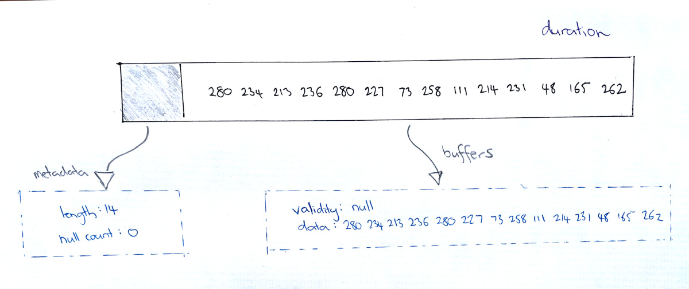
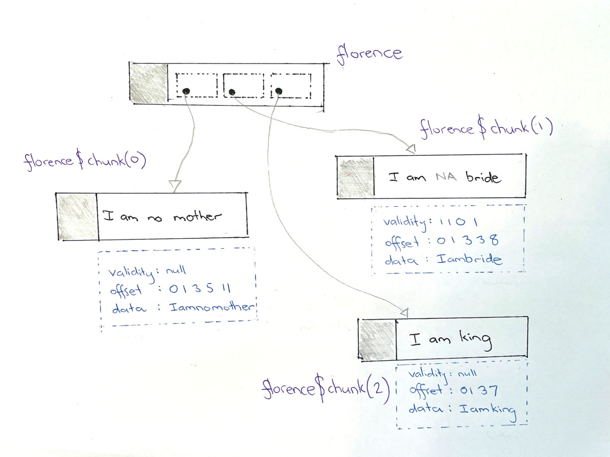

![]()
library(arrow)
library(tibble)
options(scipen = 20)“The time has come,” the Walrus said,
“To talk of many things:
Arrays (in Arrow) and Record Batches,
Of Tables, Chunks and things—
Why IPC’s great for streaming blocks—
But for saving, Parquet wins.”
(My sincere apologies to Lewis Carroll)
This post has been rolling around in my head since the start of April. I’ve known from the beginning what I want to say – approximately! – but not how I want to say it. It is annoying me, and at a certain point I decided I just needed to put words to metaphorical paper and see what happens. It’s another post about Apache Arrow, the fourth in a series I’ve been writing.
My goal in this one is… well, I suppose it is partly to do my job since I am employed to write these things, but it’s a little more than that. My goal is to clarify something that has been a source of confusion about Arrow for me, in the hope that once I’ve sorted it out in my own head I can perhaps contribute something to the official documentation that helps other people who might have the same problem that I have.
So here’s the thing that has been giving me grief. If you go to the Get Started page for the arrow R package, one of the first things you encounter is a table telling you that Arrow has classes for zero-dimensional data (scalars), one-dimensional data (arrays and other vector-like data), and two-dimensional data (tabular or data frame-like data). I’ll reproduce the entire table in full because it’s actually super important…
| Dim | Class | Description | How to create an instance |
|---|---|---|---|
| 0 | Scalar |
single value and its DataType |
Scalar$create(value, type) |
| 1 | Array |
vector of values and its DataType |
Array$create(vector, type) |
| 1 | ChunkedArray |
vectors of values and their DataType |
ChunkedArray$create(..., type) or alias chunked_array(..., type) |
| 2 | RecordBatch |
list of Arrays with a Schema |
RecordBatch$create(...) or alias record_batch(...) |
| 2 | Table |
list of ChunkedArray with a Schema |
Table$create(...), alias arrow_table(...), or arrow::read_*(file, as_data_frame = FALSE) |
| 2 | Dataset |
list of Tables with the same Schema |
Dataset$create(sources, schema) or alias open_dataset(sources, schema) |
…but I’m going to be honest with you, dear reader. When I first started learning Arrow, I had no idea what any of this meant. This whole table was completely intimidating. I looked at it and thoughts roughly along the following lines went through my head:
Oh… f**k me. I’m completely out of my depth, I am too stupid to understand any of this. I should quit now and find a new job before everyone realises I’m a total fraud. They made a terrible mistake hiring me and… blah blah blah
The self-pity went on for a while, but I’ll spare you the details.
Eventually I remembered that this is my impostor syndrome talking and that I am in fact quite good at learning technical concepts. The problem I’m encountering here is that this table is not in any way self-explanatory, but it’s placed in a part of the documentation where new users will easily encounter it and get confused the same way I did. The placement itself isn’t the problem: the content of the table is actually pretty important for any Arrow user to grasp, but all the explanatory scaffolding is missing.
To a new user, most of this is is incomprehensible. What exactly is a ChunkedArray and how is it different from an Array? Why are these necessary as distinct concepts? While we are at it, what the heck is a RecordBatch, a Table and a Dataset, and what makes them different from one another? Unless someone takes the time to explain it all to you, it does look like Arrow is unnecessarily complicated, doesn’t it? And yet, some very smart people seem to think that Arrow is a very good idea indeed so… what’s the story?
Kick back, relax into whatever comfort you have available, and let me tell you a tale.1 All will be revealed…
Scalars
Let’s start with scalars. A scalar object is simply a single value, that can be of any type. It might be an integer, a string, a timestamp, or any of the different data types that Arrow supports. I won’t talk about the different types in this post because I already wrote an extremely long post on that topic. For the current purposes, what matters is that a scalar is one value. It is “zero dimensional”. All higher order data structures are built on top of scalars, so they are in some sense fundamental, but there is not much I need to say about them for this post.
Arrays
Let’s turn our attention to arrays next. I’ll start by introducing some terminology from the page describing the Arrow specification:
- An array in Arrow is analogous to a vector in R: it is a sequence of values with known length, all of which have the same type. Coming to Arrow from R, one thing I found a little difficult to wrap my head around is the concept of an array as an immutable object. Once an Arrow array has been initialised, it cannot be modified.
- A related but different concept is that of a buffer, a sequential virtual address space with a given length. Any byte in the buffer can be reached via a single pointer offset less than the region’s length.
- Finally, we have the concept of the physical layout, which describes how information is laid out in memory, without taking into account of how that information is interpreted. For example, a 32-bit signed integer array and 32-bit floating point array have the same layout because they have the same physical structure in memory. The meaning of the bits that make up a 32-bit float is different to the meaning of the bits that make up a 32-bit integer, but the physical layout is the same.
Structure of arrays
Okay, for the most part, those of us who use Arrow on an everyday basis don’t really need to care all that much about low level implementation details. The exact physical layout of an array in memory doesn’t matter to us. But, on the other hand, in this post I’m trying to highlight the fact that Arrow does make some good choices about these details, so it makes a little sense to dive deeper than we normally would. So let’s take a look at an example taken from the Arrow documentation pages. Here’s a simple array of int32 values:
[1, null, 2, 4, 8]What does this thing look like in memory? It contains two pieces of metadata, namely the length of the array (i.e. 5) and a count of the number of null values (i.e., 1), both of which are stored as 64-bit integers. The arrow package makes it easy to extract the values, because the Array object has fields and methods that will return them. To illustrate this, let’s create the array shown above:
arr <- Array$create(c(1L, NA, 2L, 4L, 8L))
arrArray
<int32>
[
1,
null,
2,
4,
8
]Yep, that looks like the right thing. Now we can use the length() method and the null_count field to extract the relevant metadata:
arr$length()[1] 5arr$null_count[1] 1Okay, that seems reasonable. What about the data itself? Where is that stored? In Arrow, these are stored within buffers, a contiguous block of memory assigned to the array. The number of buffers associated with an array depends on the exact type of data being stored. For an integer array such as arr, there are two buffers, a validity bitmap buffer and a data value buffer. A little later in the post I’ll talk about how you can access the raw content of these buffers, but for now let’s talk about what each of these buffers contains.
The validity bitmap is binary-valued, and contains a 1 whenever the corresponding slot in the array contains a valid, non-null value. Setting aside some very tiresome technicalities we can imagine that the validity bitmap is a buffer that contains the following five bits:
10111Except… this isn’t really true, for three reasons. First, memory is allocated in byte-size units, so we have to pad it out to the full 8 bits. That gives us the bitmap 10111000. Second, that’s still a little inaccurate because – assuming you read left to right – you’re looking it with the “most significant bit” first (i.e., big endian format), and the bits are actually organised with the least significant bit first (i.e., little endian format) so the bits in this byte should be shown in the reverse order, 00011101. Third, this is still misleading because I’ve not padded it enough. For reasons that make a lot of sense if you start diving into the Arrow specifications at a low level, you have to imagine another 503 trailing zeros.2 So that the nice and neat 10111 I’ve shown above actually looks like this in memory:
| Byte 0 (validity bitmap) | Bytes 1-63 |
|---|---|
00011101 |
0 (padding) |
I know, I know. Boring. Let’s move on.
Okay, now let’s have a look at the value buffer. It’s essentially the same logic. Again notice that its padded out to a length of 64 bytes to preserve natural alignment, but for our purposes those details don’t matter too much. Here’s the diagram showing the physical layout, again lifted straight from the Arrow specification page:
| Bytes 0-3 | Bytes 4-7 | Bytes 8-11 | Bytes 12-15 | Bytes 16-19 | Bytes 20-63 |
|---|---|---|---|---|---|
1 |
unspecified | 2 |
4 |
8 |
unspecified |
Each integer occupies 4 bytes, as required by the int32 data type. Just to give you a sense of what that looks like, I’ll take a peek at the bits that make up the integer 8 (i.e., the contents of Bytes 16-19). I could do this using base R with a command like intToBits(8L) but the bits() function from the pryr package produces a more compact output so I’ll do this:
pryr::bits(8L)[1] "00000000 00000000 00000000 00001000"Or, to condense it even further, we can express each byte as a hexadecimal value. That’s what the pryr::bytes() function does, so this is an equivalent way of writing out the content of those four bytes:
pryr::bytes(8L)[1] "00 00 00 08"Putting all this together you can imagine – roughly speaking – what the contents of the data buffer should look like. Ignoring all the trailing bytes used for padding, and not worrying too much about what’s going on with the command I’ve used to extract them, the 20 bytes worth of actual data in the data buffer look like this:
arr$data()$buffers[[2]]$data() [1] 01 00 00 00 00 00 00 80 02 00 00 00 04 00 00 00 08 00 00 00Notice that the last four bytes shown are written 08 00 00 00 (little endian), whereas the bytes produced by pryr::bytes() are shown in the other direction. It’s the same thing, just a different display convention!
Okay, so what should you take away from all this? Well, firstly, fear not – if you’re an R user like me and trying to wrap your head around Arrow, you don’t really have to spend much of your time thinking about what this physical layout looks like. All you need to take away from it is that an Arrow array is an immutable object with this particular “metadata + buffers” structure that is designed to be efficient, and that each buffer is a contiguous bloc of memory on your machine.
Peeking inside arrays
dance_fever <- read_csv_arrow("dance_fever_tracks.csv")
dance_fever# A tibble: 14 × 3
track_number title duration
<int> <chr> <int>
1 1 King 280
2 2 Free 234
3 3 Choreomania 213
4 4 Back in Town 236
5 5 Girls Against God 280
6 6 Dream Girl Evil 227
7 7 Prayer Factory 73
8 8 Cassandra 258
9 9 Heaven Is Here 111
10 10 Daffodil 214
11 11 My Love 231
12 12 Restraint 48
13 13 The Bomb 165
14 14 Morning Elvis 262duration <- Array$create(dance_fever$duration)
durationArray
<int32>
[
280,
234,
213,
236,
280,
227,
73,
258,
111,
214,
231,
48,
165,
262
]
Array objects come with a variety of methods you can use to examine their properties. For instance, you can use the length(), null_count() and nbytes() to calculate the length of the array, the number of missing values it contains, and the number of bytes it occupies in memory. To find out how many bytes have been allocated the duration array, we would do this:
duration$nbytes()[1] 56If you really want to dive in and take a look at how information is structured in an array, you can use the data() method to return an ArrayData object:
duration$data()ArrayDataThis output is a little underwhelming because – at the moment! – the print method for an ArrayData object doesn’t do anything except print the class name. However, it’s an R6 object which means everything is stored in an environment. So let’s use the env_print() function from the rlang package to take a look at it as an environment:
rlang::env_print(duration$data())<environment: 0x55941428fbe0> [L]
Parent: <environment: empty>
Class: ArrayData, ArrowObject, R6
Bindings:
• .__enclos_env__: <env>
• buffers: <active>
• offset: <active>
• null_count: <active>
• length: <active>
• type: <active>
• `.:xp:.`: <externalptr>
• clone: <fn> [L]
• print: <fn> [L]
• set_pointer: <fn> [L]
• pointer: <fn> [L]
• initialize: <fn> [L]There’s a lot going on here. There are various fields used to store metadata about the array, but most of those are things we’ve seen before and you can access the same information in other ways (e.g., duration$data()$length stores the same value returned by duration$length()). The one we’re actually interested in here is buffers:
duration$data()$buffers[[1]]
NULL
[[2]]
BufferOkay, so there are two buffers here. If we look back up to the earlier discussion we might (correctly!) guess that the first one is the validity bitmap buffer, and the second one is the data buffer. As before, the buffer is an R6 object and guess what? It also has a data() method. If we peek into that, at long last we uncover the thing we were looking for:
data_buffer <- duration$data()$buffers[[2]]$data()
data_buffer [1] 18 01 00 00 ea 00 00 00 d5 00 00 00 ec 00 00 00 18 01 00 00 e3 00 00 00 49
[26] 00 00 00 02 01 00 00 6f 00 00 00 d6 00 00 00 e7 00 00 00 30 00 00 00 a5 00
[51] 00 00 06 01 00 00The contents of data_buffer are the raw bytes stored ihe data buffer that Arrow created for the duration array. They’re not easy to read in this format, so I’ll use the readBin() function from base R to parse the binary data as integers, and just like that…
readBin(data_buffer, what = "integer", n = 14) [1] 280 234 213 236 280 227 73 258 111 214 231 48 165 262…we have reconstructed the values from the data buffer.
A nicer way
array_layout(duration)
── Metadata
• length : 14
• null count : 0
── Buffers
• validity : null
• data : 280 234 213 236 280 227 73 258 111 214 231 48 165 262Chunked arrays
florence <- chunked_array(
c("I", "am", "no", "mother"),
c("I", "am", NA, "bride"),
c("I", "am", "king")
)
florenceChunkedArray
[
[
"I",
"am",
"no",
"mother"
],
[
"I",
"am",
null,
"bride"
],
[
"I",
"am",
"king"
]
]A chunked array has some structure to it:

We can check:
florence$chunk(0) |> array_layout()
── Metadata
• length : 4
• null count : 0
── Buffers
• validity : null
• offset : 0 1 3 5 11
• data : Iamnomotherflorence$chunk(1) |> array_layout()
── Metadata
• length : 4
• null count : 1
── Buffers
• validity : 1 1 0 1
• offset : 0 1 3 3 8
• data : IambrideRecord batches
A record batch is table-like data structure that is semantically a sequence of fields, each a contiguous Arrow array.3 A struct is a nested type parameterized by an ordered sequence of types (which can all be distinct), called its fields. Each field must have a UTF8-encoded name, and these field names are part of the type metadata. A struct array does not have any additional allocated physical storage for its values. A struct array must still have an allocated validity bitmap, if it has one or more null values. Physically, a struct array has one child array for each field. The child arrays are independent and need not be adjacent to each other in memory. To illustrate, let’s return to our dance_fever data set:
dance_fever# A tibble: 14 × 3
track_number title duration
<int> <chr> <int>
1 1 King 280
2 2 Free 234
3 3 Choreomania 213
4 4 Back in Town 236
5 5 Girls Against God 280
6 6 Dream Girl Evil 227
7 7 Prayer Factory 73
8 8 Cassandra 258
9 9 Heaven Is Here 111
10 10 Daffodil 214
11 11 My Love 231
12 12 Restraint 48
13 13 The Bomb 165
14 14 Morning Elvis 262Next, let’s bundle these into a record batch:
dance_fever_batch <- record_batch(dance_fever)
dance_fever_batchRecordBatch
14 rows x 3 columns
$track_number <int32>
$title <string>
$duration <int32>Serialising a record batch
[discuss the IPC protocol for record batches here. Mention that feather is the same thing but as a file format rather than an input stream]
Okay, so here’s where we’re at. The Arrow specification gives a precise statement of what an array should look like and how it should be laid out in memory. It also gives a precise statement about how arrays can be organised into record batches. Not only that, it provides a specification for how a record batch should be serialised via the IPC protocol. The IPC protocol is designed so that the structure of the serialised record batch is essentially identical to the physical layout of an in-memory record batch, which minimises the amount of computation required.
Tables
Datasets
Footnotes
In the near future, I hope that the documentation itself is going to tell this story – and yes, I realise that by calling attention to the issue I’ve effectively volunteered to fix it – but sometimes it’s easier to do the same job in an informal blog post where you have the luxury of going overboard with “authorial voice” and “narrative”, and all those other fancy things that writers love.↩︎
Quick explanation: As a general rule, if you want things to be efficient you want the beginnings and endings of your data structures to be naturally aligned, in the sense that the memory address is a multiple of the data block sizes. So on a 64-bit machine, you want the memory address for every data structure to start on a multiple of 64 bits. Apparently that makes lookup easier or something. Unfortunately, I’ve only specified 8 bits (i.e. 1 byte) so if I wanted to ensure that the validity bitmap is naturally aligned I’m going to need to add another 7 bytes worth of padding in order to make it to the full 64 bits. This method of aligning data structures in memory is referred to as “8 byte alignment”. However, what Arrow does in this situation is 64 byte alignment, so each data structure has to be 64 bytes long at a minimum. This design feature exists to allow efficient use of modern hardware, and if you want to know more, it’s discussed on the Arrow website.↩︎
If you’re familiar with Arrow data structures, it is in essence a struct with additional metadata↩︎
Reuse
Citation
BibTeX citation:
@online{navarro2022,
author = {Danielle Navarro},
title = {Arrow Tables and Record Batches},
date = {2022-04-30},
url = {https://blog.djnavarro.net/posts/2022-04-30_arrow-tables-and-record-batches},
langid = {en}
}
For attribution, please cite this work as: